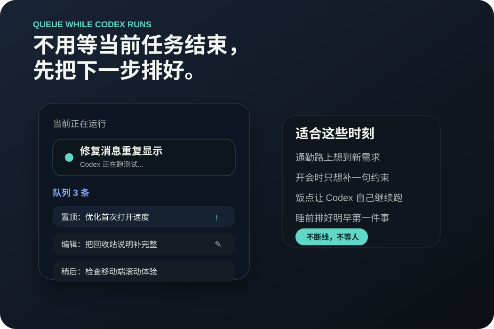
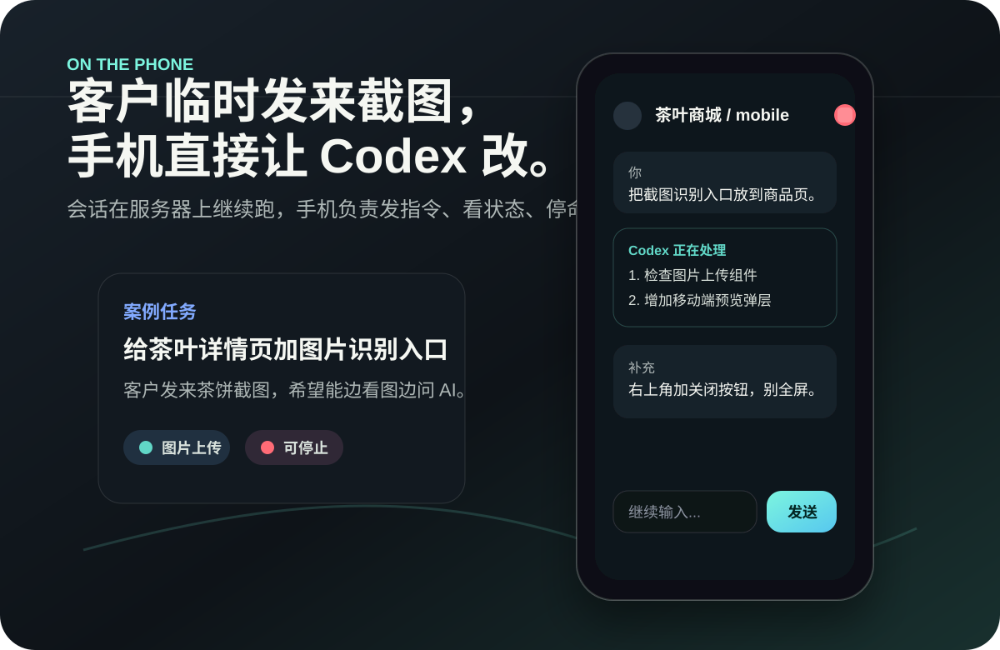
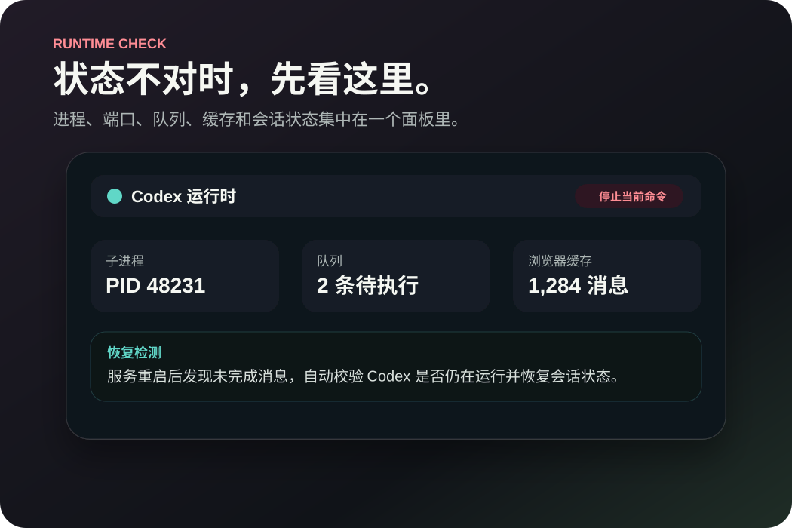
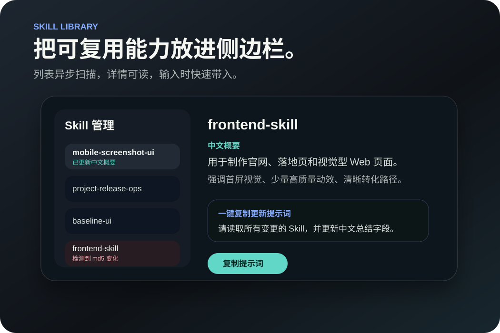

Queue
灵感来了先排队，当前任务结束后自动接上。
开会、通勤、吃饭时想到补充需求，直接放进队列；需要调整顺序时置顶或编辑。
Self-hosted Codex control
在路上也能看进度、补需求、切会话、停命令。Codex 留在服务器稳定运行，手机只负责友好地控制它。
curl -fsSL https://raw.githubusercontent.com/twotwo7/codex-mobile-console/main/scripts/install.sh | bash
Real use cases
不是远程 SSH 的小屏硬撑，而是把 Codex 的关键动作重新整理成适合手机操作的控制面板。

Queue
开会、通勤、吃饭时想到补充需求，直接放进队列；需要调整顺序时置顶或编辑。

Runtime
右上角状态、运行时面板、停止入口、恢复检测放在一起，避免任务完成后还误以为仍在运行。

Skills
Skill 管理异步扫描、本地缓存、变更提示，主聊天流程保持轻量稳定。
Feature map
服务端管理 Codex 子进程，页面关闭、浏览器退后台、网络断开后仍可回到原会话。
多行输入、图片上传、消息折叠、按轮查看、自动跟随底部，尽量减少手机屏幕浪费。
可查看运行时、终止当前命令、回收站删除、30 天登录策略、仅本机绑定部署。
适合 VPS、NAS、家用主机或远程开发机，推荐放在 HTTPS、VPN 或访问控制后面。
Install and update
适合国内服务器：GitHub 保持主仓库，OSS 提供更稳定的版本清单和发布包下载，更新前会做校验并避开正在运行的 Codex 任务。
安装脚本从 GitHub 克隆项目，安装依赖，创建 systemd 服务，并绑定到 127.0.0.1:7072。
维护者执行 npm run release:oss，生成 git bundle、sha256 和 latest.json 清单上传到阿里云 OSS。
部署端配置 APP_UPDATE_MANIFEST_URL 后，控制台优先读取 OSS 清单；不可用时再回退 GitHub 标签和分支检查。
升级会阻止运行中的 Codex 任务和脏工作区；下载包通过 sha256 与 git bundle 校验后，checkout tag、安装依赖、检查语法，再请求安全重启。
APP_UPDATE_MANIFEST_URL=https://your-bucket.oss-cn-hangzhou.aliyuncs.com/codex-mobile-console/releases/latest.json
ALI_OSS_BUCKET=your-bucket ALI_OSS_ENDPOINT=oss-cn-hangzhou.aliyuncs.com npm run release:oss
Deploy once, use anywhere
应用负责接管本机 Codex 会话、历史缓存、PWA 访问和运行时状态。你只需要在手机浏览器里打开自己的域名。